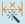
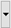
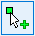
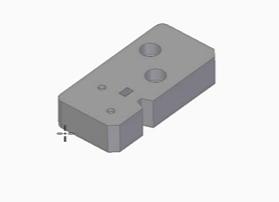
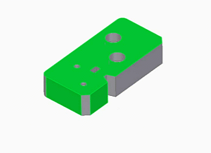

Auto-dimension the model
You can automatically generate the dimensions for the part and sheet metal models. You can also choose the specific features to generate dimensions on them.
For imported models, we recommend that you run the feature recognition commands before running the Auto Dimension

command. For more information, see Feature recognition of imported models.-
Choose the PMI tab→Dimension group→Auto Dimension command.
In the Auto Dimension Properties dialog box, you can specify the specifications for generating and displaying the dimensions. By default, this dialog box appears when the check box, Show this dialog when the command begins, is selected. For more information, see Style dialog box.
-
In the Auto Dimension dialog box, under Format, select the standard for the dimensioning.
You can select the existing styles or create a new one and save it for quick reuse. The new style is listed in the Style dialog box. For more information, see Specify the properties for auto dimensioning.
-
To specify the properties for the dimensioning, under Properties, click Properties
 . For more information, see Specify the properties for auto dimensioning.
. For more information, see Specify the properties for auto dimensioning.To select the saved settings, click

next to the properties icon. -
To generate the dimensions only on the selected features, under Feature Selection, click Manual Feature Selection

and select the required feature and faces.By default, the dimensions are generated on a complete model.
-
Under Datum Selection, select the primary, secondary, and tertiary datums and then click Finish.
You can select the datum frames of the predefined datum faces.
Note:The selected datums must be perpendicular to each other.

Figure 8-1. Datum selection

Figure 8-2. Dimension generation when you click Finish
-
Dimensions are generated automatically as per the selection of datums and the specified properties and are grouped together under the Auto Dimension Scheme X node.
-
Location dimensions for bosses, rounds, chamfers, and slots are not generated.
-